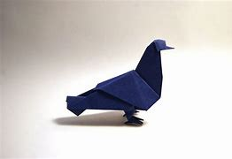

Origami Designs
About us
Follow us
.jpg)
Instresting fact on camel
- There are mainly two species of true camels: the Dromedary and the Bactrian. The Dromedary is found in the Middle East...
- There are no wild Dromedary camels as they have all been domesticated.
- Camels can survive in harsh environments. They can survive without food and water for long.
- Fully grown camels can be 3 metres in length and stand as tall as 2 metres at their hump.

Instresting fact on pigeon
- Remarkable navigational abilities
- Excellent hearing abilities Pigeons have consisted of those birds which have excellent hearing abilities..
- Diet of the Pigeons Pigeons are herbivores. They eat common food items like grains and seeds, vegetables, fruits
- The pigeon as a messenger In the past pigeons were used in communication.
.jpg)
Instresting fact on panda
- The typical panda grows from 1.2 m to 1.9 m.
- Pandas are native to south-central China.
- In captivity, the average lifespan of a panda is 30 years.
- Pandas typically weigh from 70 kg to 100 kg.
- An estimated 1,864 pandas still roam the wild, while 400 are kept in captivity.